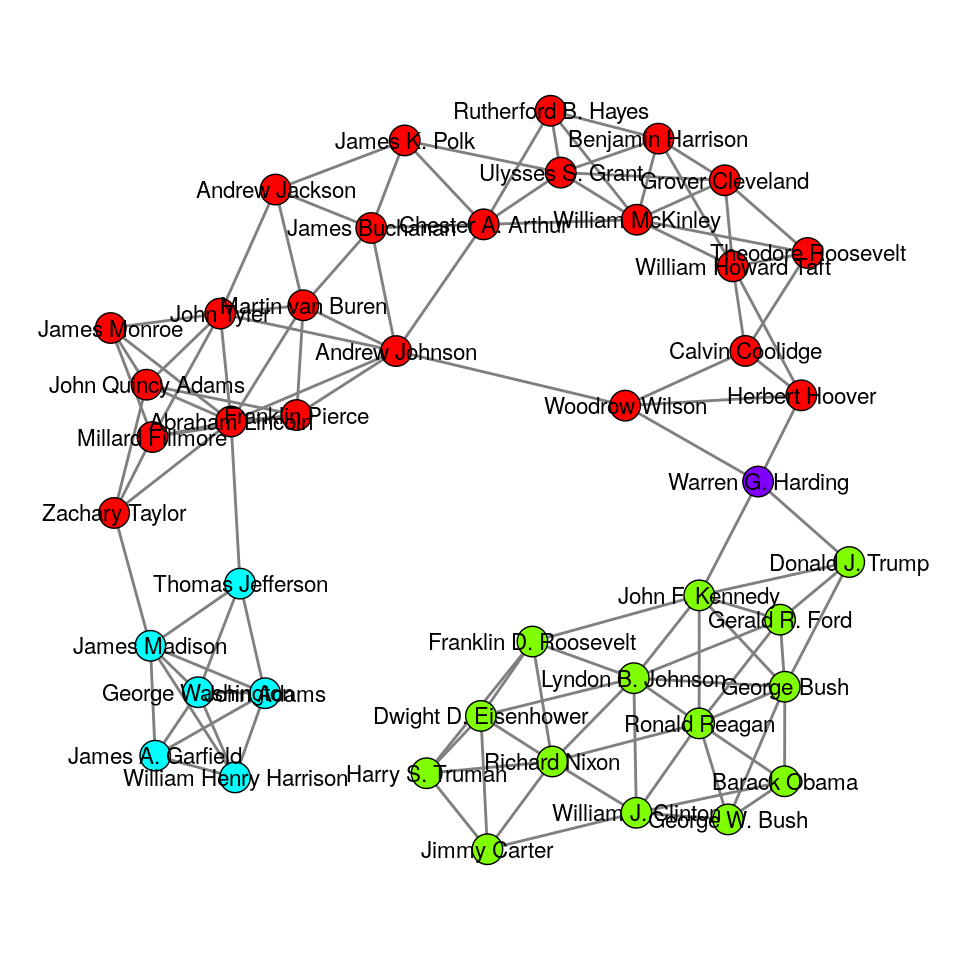

clustRviz Details
John Nagorski
2018-08-24
clusRvizDetails.RmdIntroduction
The clustRviz package intends to make fitting and visualizing CARP and CBASS solution paths an easy process. In the Getting Started vignettee we provide a quick start guide for basic usage, fitting, and plotting. In this vignette, we build on the basics and provide a more detailed explanation for the variety of options available in clustRviz.
Background
The starting point for CARP is the Convex Clustering (Hocking et al. 2011; Chi and Lange 2015; Tan and Witten 2015) problem :
\[ \underset{{\boldsymbol{U}}}{\textrm{minimize}} \;\; \frac{1}{2} \| {\boldsymbol{X}} - {\boldsymbol{U}} \|_F^2 + \lambda \sum_{ l < m} w_{l,m} \| {\boldsymbol{u}}_l - {\boldsymbol{u}}_m \|_2 \]
where \({\boldsymbol{X}}\) is an \(p \times n\) input data matrix, consisting of \(p\) measurements on \(n\) subjects, \(\lambda > 0\) a regularization parameter, and \(w_{l,m}>0\) a weight for each pair of observations; here \(\| . \|_F\) and \(\| . \|_2\) denote the Frobenius norm and \(l_2\) norm, respectively.
Briefly, Convex Clustering seeks to find and estimate,\(\hat{{\boldsymbol{U}}} \in \mathbb{R}^{p\times n}\), such that it is faithful to the original data (Frobenius norm loss term) while also encouraging fusions among observations (\(l_2\) regularization between columns of \({\boldsymbol{U}}\), denoted \(u_l\)). At small values of regularization, \(\lambda \approx 0\), Convex Clustering returns estimates similar to the original data with little or no fusion among observations. As regularization increases, more fusions occur and Convex Clustering returns estimates such that \(\| \hat{{\boldsymbol{u}}}_l - \hat{{\boldsymbol{u}}}_m \| = 0\). When such fusions occur we say that observations \(l\) and \(m\) belong to the same cluster. Taken to the extreme, sufficiently large values of \(\lambda\) result in all observations belonging to the same cluster.
When fitting for multiple values of \(\lambda\) Convex Clustering results in a continious solution path of clustering solutions. One solution method for the problem above is via the alternatving direction method of multipliers (ADMM) (Boyd et al. 2011). For a given \(\lambda\), Convex Clustering can be solved by iteratively applying ADMM updates until convergence (Chi and Lange 2015). However in order to obtain a full path of clustering solutions, this method must be employed for multiple \(\lambda_k\) which is computationally expensive.
To address the computational burden of Convex Clustering, we utilize the framework of Algorithmic Regularization Paths (Hu, Chi, and Allen 2016) to develop efficient methods for approximating the Convex Clustering and Biclustering solution paths: Convex Clustering via Algorithmic Regularization Paths (CARP) and Convex Biclustering via Algorthmic Regularization with Small Steps (CBASS), respectively. Rather than fully solving the Convex Clustering optimization problem at each \(\lambda_k\), we instead perform single updates combined with gradual increases in regularization at each step. As regularization increases with each iteration, the column differences of the iterates, \(\| {\boldsymbol{u}}^{(k)}_l - {\boldsymbol{u}}^{(k)}_m \|\), eventally become \(0\) for all \(l,m\). In contrast to traditional iterative solution techniques, we instead employ the iterates themselves as approximations for the true solution path. Remarkably, this approximation not only works well empirically, but can be shown theoretically to well approximate the true Convex Clustering solution path.
Preprocessing and Inputs
While the CARP and CBASS functions provides several reasonable default choices for weights, algorithms, etc, it is important to know their details if one wishes to compute more customized clustering choices. Here we examine several of the inputs to CARP and CBASS, as well as their preprocessing technqiues
Here we use a dataset of presidential speechs obtained from The American Presidency Project to illustrate the use of clustRviz. The presidential speech data set contains the top 75 most variable log-transformed word counts of each US president, aggregated over several speeches. Additional text processing such as removing stop words and stemming have been done via the tm package.
Let’s begin by loading our package and the dataset:
library(clustRviz)
data("presidential_speech")
Xdat <- presidential_speech
obs.labels <- rownames(Xdat)
var.labels <- colnames(Xdat)
Xdat[1:5,1:5]
#> amount appropri british cent commerci
#> Abraham Lincoln 3.433987 2.397895 1.791759 2.564949 2.708050
#> Andrew Jackson 4.248495 4.663439 2.995732 1.945910 3.828641
#> Andrew Johnson 4.025352 3.091042 2.833213 3.332205 2.772589
#> Barack Obama 1.386294 0.000000 0.000000 1.386294 0.000000
#> Benjamin Harrison 4.060443 4.174387 2.302585 4.304065 3.663562
head(obs.labels)
#> [1] "Abraham Lincoln" "Andrew Jackson" "Andrew Johnson"
#> [4] "Barack Obama" "Benjamin Harrison" "Calvin Coolidge"
head(var.labels)
#> [1] "amount" "appropri" "british" "cent" "commerci"
#> [6] "commission"Preprocessing
Normalization
An important first choice before clustering is whether to center and scale our observations. Centering is typically appropriate, and is done by default for CARP and CBASS. The choice of scaling is left to the user discression, but should typically be applied if measurements are a vastly different scales. In the case of the presidental speech dataset, all variables are of the same type and so we do not scale our data matrix.
# Centering data before computing the CARP solution path
Xdat.preprocessed <- scale(Xdat,center=TRUE,scale=FALSE)In the CARP function this preprocessing is done via the X.center and X.scale arguements. If the data is pre-processed outside of CARP, as is the case here, these options may be set to FALSE; by default, CARP with center but not scale an inputted data matrix.
Both CARP and CBASS (below) admit several options for computing the (bi)clustering solution path. While we will encounter many options along the way, see the carp.control and cbass.control functions for full details.
Similarly, the CBASS function also requires that data preprocessed prior usage. Because CBASS clusters both observations and variables, here centering is done by subtracting away the global mean of our data matrix.
# Subtracting global mean before computing the CBASS solution path
Xdat.bi <- Xdat
Xdat.bi.preprocessed <- Xdat - mean(Xdat)Dimension Reduction
While not directly addressed by CARP or CBASS, high dimensional measurements can present a challenge for clustering methods. Owing to the “curse of dimensionality”, high dimensional measurements may deliver sub-optimal performance for distance-based methods generally. As such, performing dimensionality reduction before applying CARP
may result in more interpretable clusters. We leave the choice of dimensionality reduction to the end-user, but still recommend the reduced feature set be pre-processed as described above.
For the purpose of visualuization, CARP addresses the problem of high dimenstionality by visualizing the principal components of the data by default.
Weights
Weights are arguably one of the most important inputs to both CARP and CBASS. As we can see from the optimization probelms above, weights impart apriori preference concerning which observations (and variables in the case of CBASS) should be fused together. This important feature allows us to incorportate domain knowledge, if available. In the absense of domain knowledge, however, weights can easily be constructed via the data itself.
One might first consider simply using a set of uninformative weights, \(w_{l.m} = 1\). While perhaps not appearent at first, such weight choices can also greatly affect the computation time of both CARP and CBASS (and certainly Convex Clustering). To see this note that in the Convex Clustering problem above the regularization term contains \(\binom{n}{2}\) summands, drastically increasing computations as \(n\) increases. Computations can be reduced by making the majority of weights zero and greatly reducing the number of summands.
Here we detail clustRviz’s default weight choices, as well as how weights can be constructed manually. By default CARP and CBASS assume no prior domain knowledge and construct distance-based weights via a gaussian kernel:
\[
w_{l,m} = \exp\{ -\phi \|{\boldsymbol{x}}_l - {\boldsymbol{x}}_m \|^2_2 \}
\] Given a choice of \(\phi\) (discussed in more detail below), an initial set of weights can be constructed via DenseWeights function. In the case of presidential speech data for example,
dense.weights <- clustRviz:::DenseWeights(X = Xdat.preprocessed,phi=1e-3)
head(dense.weights)
#> [1] 0.9053890 0.9676079 0.5474781 0.8777638 0.8041133 0.9350156As the name suggests DenseWeights computes \(w_{l,m}\) for all pairs of observations. For the presidents data, with \(n=44\) observations, this results in a vector of length \(\binom{44}{2} = 956\).
length(dense.weights)
#> [1] 946The weights are returned in lexicographical order, namely \({\boldsymbol{w}} = (w_{1,2},w_{1,3},\dots,w_{l,m},\dots,w_{n-1,n} )\) The value of \(\phi\) can have a marked effect on the weights.
Dense weights for different choices of phi
The choice of \(\phi\) determines variance of the weights. Generally, choices of \(\phi\) which result in higher variance weights tend to be more informative. A simple method for finding a reasonable choice of \(\phi\) is a basic grid search. For example:
phi.vec <- 10^(-4:4)
sapply(phi.vec,function(phi){
var(clustRviz:::DenseWeights(X=Xdat.preprocessed,phi = phi))
}) %>%
which.max() %>%
phi.vec[.]
#> [1] 0.01Additionally, DenseWeights allows for the specification of alternative distance measures. Depending on the dataset, alternative metrics to traditional euclidean distance may result in more informative clustering solutions.
dense.weights.can <- clustRviz:::DenseWeights(X = Xdat.preprocessed,phi=1e-5,method = 'canberra')Dense weights with Canberra distance
Distance-based weights can be made sparse by only fusing together nearest neighbors. For a given observations \(l\) we consider its \(k\) nearest neighbors \(\textrm{ne}_k(l)\). Given a pair of observations \(l,m\), we set their corresponding weight, \(w_{l,m}\), to zero if either is not amongst the other nearest neighbors. Specifically,
\[ \tilde{w}_{l,m} = w_{l,m} {\boldsymbol{1}}_{\textrm{ne}_k(l)}(m) {\boldsymbol{1}}_{\textrm{ne}_k(m)}(l) \] where \(w_{l,m}\) is our original dense weight values and \({\boldsymbol{1}}_{A}(x)\) denotes the indicator function of the set \(A\).
For a specifid value of \(k\), a sparse vector of \(k\) nearest neighbor weights can be generated via the SparseWeights function:
k.neighbors <- 5
clustRviz:::SparseWeights(
X=Xdat.preprocessed,
dense.weights = dense.weights,
k = k.neighbors) -> sparse.weightsIn the case of \(k=\) 5 above, the number of non-zero weight values (and hence the number of summands in our original objective) has been reduced from \(\binom{44}{2} = 956\) to
sum(sparse.weights!=0)
#> [1] 144Computationally, it is tempting to set \(k\) small and ensure fast compuatation. Setting \(k\) too small, however, can potentially prevent observations from fusing, regardless of the amount of regularization. In order to verify that our sparse set of weights allows for the eventual fusion of all observations we can examine its graphical representation. The function PlotWeightGraph displays the fusion graph of our observations induced by the support of our weight set. The fusion graph displays each observation as a vertex, and connects two observation with an edge if their corresponding weight is non-zero. Such connections between observations indicate their ability fuse into a common cluster, given large enough regularization.
Below we consider the extreme case of \(k=1\), which while computationally fast presents an immediate difficulty.
Examining the graph above, we note that the number of connected components is strictly greater than one. As such, regardless of the number of CARP iteratations (and the associated regularization increases) it will not be possible fuse all observations into a single cluster. Such extreme weight choices should typically be avoided as they not only hinder the agglomorative nature of CARP and CBASS, but also lead to biased and less interpretable solution paths.
At the other extreme, large values of \(k\) again result in long computation time and bring little to no improvement on the resulting solution sequence; an example of such an overly dense graph can be seen below.
In order to provide a reasonable choice regarding weight sparsity, the function MinKNN may be used to find a balance between computational efficiency and poor clustering performance. MinKNN takes as its arguement an initial set of dense weights and returns the smallest \(k\) such the graph induced by the support of the resulting set of sparse weights contains exactly one connected component. For our current vector of weights we have:
clustRviz:::MinKNN(
X = Xdat.preprocessed,
dense.weights = dense.weights
) -> k.min
k.min
#> [1] 4Using the k.min value above we may compute the corresponding sparse weight vector and view its resulting graph below.
clustRviz:::SparseWeights(
X = Xdat.preprocessed,
dense.weights = dense.weights,
k = k.min
) -> sparse.weightsWe can see that the resulting graph offers a compromise between the two extremes. By default both CARP and CBASS use the value returned by MinKNN to produce sparse sets of weights. While slightly larger values of \(k\) can be used, it is not recommended to pass below this threshold for the reasons stated above.
Fitting
clustRviz aims to make it easy to compute the CARP and CBASS solution paths, and to quickly begin exploring the results. To this end, many reasonable choices regarding both preprocessing and inputs disucussed above are made by default, allowing for solution path to be computed from the raw data alone. In the case of CARP, for example, we may fit the compute the solution path for the presidents data via the CARP function:
carp.fit <- CARP(X=Xdat)Once completed, we can examine a brief summary of the fitted object
carp.fit
#> CARP Fit Summary
#> ====================
#>
#> Algorithm:
#>
#> Available Visualizations:
#> - Static Dendrogram: TRUE
#> - Static Cluster Path: TRUE
#> - Interactive Visualization: TRUE
#>
#> Number of Observations: 44
#> Number of Variables: 75
#>
#> Pre-processing options:
#> - Columnwise centering: TRUE
#> - Columnwise scaling: FALSE
#>
#> RBF Kernel Weights:
#> - phi = 0.01
#> - K = 4
#>
#> Raw Data:
#> amount appropri british cent commerci
#> Abraham Lincoln 3.433987 2.397895 1.791759 2.564949 2.708050
#> Andrew Jackson 4.248495 4.663439 2.995732 1.945910 3.828641
#> Andrew Johnson 4.025352 3.091042 2.833213 3.332205 2.772589
#> Barack Obama 1.386294 0.000000 0.000000 1.386294 0.000000
#> Benjamin Harrison 4.060443 4.174387 2.302585 4.304065 3.663562The output above displays characteristics of our data, such as sample size and number of variables, and also gives a preview of the raw input. Additionally, the summary provides information regarding both data pre-processing and weight computations. From the above we see that CARP has by default: (i) centered our data, (ii) computed distance-based weights using a gaussian kernel with \(\phi=.01\), and (iii) created a sparse set of weights using \(k=4\) nearest neighbors. Finally, the summary also provides information about the algorithm, here CARP-VIZ, as well as the available visualizations.
While CARP’s default choices work well in most scenarios, customized inputs can also be provided via the control arguement. For example, choices regrarding preprocessing and weight computations discussed above can quickly be incorporated:
CARP(
X=Xdat,
control = list(
X.center=TRUE,
X.scale=TRUE,
phi = 1e-5,
weight.dist = 'canberra',
k = 5
)
) -> carp.fit.customIndeed, in the case where strong apriori information concerning clusters is available, distance-based weight computations may be avoided altogether and user-specified weights given directly via the weights in the control list; see ?carp.control for details.
CBASS solutions can be fit in a similar manner:
CBASS(X=Xdat) -> cbass.fitAnd display its output:
cbass.fit
#> CBASS Fit Summary
#> ====================
#>
#> Algorithm:
#>
#> Available Visualizations:
#> - Static Dendrogram: TRUE
#> - Static Heatmap: TRUE
#> - Interactive Heatmap: TRUE
#>
#> Number of Observations: 44
#> Number of Variables: 75
#>
#> Pre-processing options:
#> - Global centering: TRUE
#>
#> Observation RBF Kernel Weights:
#> - phi = 0
#> - K = 4
#>
#> Variable RBF Kernel Weights:
#> - phi = 0
#> - K = 2
#>
#> Raw Data:
#> [,1] [,2] [,3] [,4] [,5]
#> [1,] 3.433987 2.397895 1.791759 2.564949 2.708050
#> [2,] 4.248495 4.663439 2.995732 1.945910 3.828641
#> [3,] 4.025352 3.091042 2.833213 3.332205 2.772589
#> [4,] 1.386294 0.000000 0.000000 1.386294 0.000000
#> [5,] 4.060443 4.174387 2.302585 4.304065 3.663562Algorithm Types
Another input into the fitting procedure is the algorithm type. By default both CARP and CBASS use VIZ-type extentions of Algorithmic Regularization to ensure dendrogram existence. However, for larger datasets (\(n.obs > 300\)) this default procedure can be computationally burdensome. To ameloriate this difficulty, traditional Algorithmic Regularization can be used, and it computation time controlled via the multiplicitive step-size parameter, \(t > 1\).
In the example below we again fit the presidental speech dataset using the carp algorithim with step size \(t=1.1\)
CARP(
X=Xdat,
control=
list(
alg.type='carp',
t=1.1
)
) -> carp.fit.t
carp.fit.t
#> CARP Fit Summary
#> ====================
#>
#> Algorithm: CARP (t = 1.1)
#>
#> Available Visualizations:
#> - Static Dendrogram: TRUE
#> - Static Cluster Path: TRUE
#> - Interactive Visualization: TRUE
#>
#> Number of Observations: 44
#> Number of Variables: 75
#>
#> Pre-processing options:
#> - Columnwise centering: TRUE
#> - Columnwise scaling: FALSE
#>
#> RBF Kernel Weights:
#> - phi = 0.01
#> - K = 4
#>
#> Raw Data:
#> amount appropri british cent commerci
#> Abraham Lincoln 3.433987 2.397895 1.791759 2.564949 2.708050
#> Andrew Jackson 4.248495 4.663439 2.995732 1.945910 3.828641
#> Andrew Johnson 4.025352 3.091042 2.833213 3.332205 2.772589
#> Barack Obama 1.386294 0.000000 0.000000 1.386294 0.000000
#> Benjamin Harrison 4.060443 4.174387 2.302585 4.304065 3.663562CBASS also allows for the use of pure Algorithmic Regularization based approaches in a similar manner. Passing alg.type=cbass along with an associated \(t\) value, will produce much faster computations for larger datasets.
By default both CARP and CBASS perform \(l_2\) regularization between observation pairs to encourage fusions, and hence cluster formation. \(l_1\) regularization may also be used again by passing the algorithm string to the control arguement; see alg.type in ?carp.control and ?cbass.control for details.
Solutions
Once fit, the clustering solution of both CARP and CBASS may be examined via the clustering function. Using our carp.fit object from above, we can extract the solution along the path which gives \(k=2\) clusters.
carp.clustering <- clustering(carp.fit,k = 2)Once extracted we may examine the clustering assignment. In the table below we see of count of the cluster membership. Additionally we consider the cluster assignment in relation to our original weight graph. We can see that the cluster membership respect our original weights.
table(carp.clustering$clustering.assignment)
#>
#> cl1 cl2
#> 30 14Additionally, we can extract the cluster means associated with \(k=2\) solution. The object cluster.means below gives the CARP iterate \({\boldsymbol{U}}^{(k)}\) along the path. We note that the columns of the respective clusters have fused together as desired.
head(carp.clustering$cluster.means)
#> cl1 cl2
#> [1,] 3.247043 1.8627224
#> [2,] 3.226682 2.0425014
#> [3,] 2.312455 0.5157932
#> [4,] 2.055121 0.7925161
#> [5,] 2.743924 0.9780746
#> [6,] 2.380273 0.1980421Along with specifying the number of clusters \(k\), we may also specify the percent of regulariziation. In the example below, we extract the clustering solution at \(25\)% along the regularization path.
carp.clustering <- clustering(carp.fit,percent = .25)Simiarly to CARP objects, CBASS clustering solutions may also be extracted via the clustering function. The desired clustering solution is returned by specifying either the number of observation clusters (k.obs), the number of variable clusters (k.var), or the percent of regularization (percent). In any case, clustering returns the observation and variable clustering assignments, as well as the matrix of cluster means. In the example below we extract the biclustering solution at the level of \(85\)% regularization.
cbass.clustering <- clustering(cbass.fit,percent = .85)
# observation clusters
table(cbass.clustering$clustering.assignment.obs)
#>
#> cl1 cl2 cl3
#> 29 14 1
# variable clusters
table(cbass.clustering$clustering.assignment.var)
#>
#> cl1
#> 75
# mean matrix
cbass.clustering$cluster.mean.matrix[1:5,1:5]
#> Abraham Lincoln Andrew Jackson Andrew Johnson Barack Obama
#> amount -0.1969111 -0.1969111 -0.1969111 0.4546688
#> appropri -0.1969111 -0.1969111 -0.1969111 0.4546688
#> british -0.1969111 -0.1969111 -0.1969111 0.4546688
#> cent -0.1969111 -0.1969111 -0.1969111 0.4546688
#> commerci -0.1969111 -0.1969111 -0.1969111 0.4546688
#> Benjamin Harrison
#> amount -0.1969111
#> appropri -0.1969111
#> british -0.1969111
#> cent -0.1969111
#> commerci -0.1969111Visualizations
An important feature of both CARP and CBASS fits is the ability to visualize an entire path of solutions. Unlike traditional clustering methods, CARP and CBASS allow for dynamic visualization of cluster formation, giving a more wholistic view of the underlying data.
In this section we examine both static and dynamic visualizations for CARP and CBASS.
Static
Static visualizations allow the user to view snapshots along the cluster solution path. In the plot below the first two principal components of the original observations (US presidents) are plotted (black dots) along with the CARP solution path (red curves). Following along the CARP solution path, we can watch
the fusions between observations as regulaization increases. To obtain a snapshot we again specify the percent of regularization.
plot(carp.fit,type = 'path',percent=.5)
Owing to the CARP-VIZ algorithm, we are also ensured a dendrogram representation for the resulting path. In the figure below we display the dendrogram of CARP-VIZ:
plot(carp.fit,type = 'dendrogram')
Additional static visualization are available for CBASS objects, allowing both static heatmaps and dendrograms for observations and variables.
plot(cbass.fit,type='var.dendrogram')Dynamic
The dynamic visualization of both CARP and CBASS give a wholistic view of cluster formation. Via the use of Shiny applications, dynamic displays of dendrograms, clustering solution paths, and biclustering heatmaps may be easily obtained.
plot(carp.fit,type='interactive')Also for CBASS:
plot(cbass.fit,type='interactive')Saving
clustRviz allows for visualizations, both static and dynamic, to be easily saved for use in presentations and publications. Static snapshots of the clustering solution paths may be saved via the saveviz function. Similar to plotting a CARP object, the percent of regularization is sufficient to obtain a visualization along the path:
saveviz(
carp.fit,
file.name = 'carp_path_static.png',
plot.type = 'path',
image.type = 'static',
percent=.5
)saveviz allows the user to specify both the the plot.type (cluster path or dendgram) and the image.type (static or dynamic). In the static example above, a .png file of the CARP solution path at \(50\)% regularization is outputed. In a similar manner, dendrograms may also be easily saved:
saveviz(
carp.fit,
file.name = 'carp_dend_static.png',
plot.type = 'dendrogram',
image.type = 'static',
percent=.5
)Dynamic visualizations can also be saved for viewing outside of Shiny applications. In the case of dynamic visuals, saveviz will output a .gif demonstrating cluster formation.
saveviz(
carp.fit,
file.name = 'path_dyn.gif',
plot.type = 'path',
image.type = 'dynamic'
)saveviz may be used for CBASS objects as well, outputing dendrograms for observation or variables, as well as heatmaps. In the example below we save a .gif biclustering heatmap.
saveviz(
cbass.fit,
file.name = 'cbass_heat_dyn.gif',
plot.type = 'heatmap',
image.type = 'dynamic'
)Discussion
clustRviz provides a integrated framework for fitting and visualizing the CARP and CBASS solution paths. clustRviz delivers fast computation relative to traditional Convex Clustering solution techniques, and brings traditional and modern clustering visualization techniques together in a unified framework.
References
Boyd, Stephen, Neal Parikh, Eric Chu, Borja Peleato, and Jonathan Eckstein. 2011. “Distributed Optimization and Statistical Learning via the Alternating Direction Method of Multipliers.” Foundations and Trends in Machine Learning 3 (1). Now Publishers Inc.: 1–122.
Chi, Eric C, and Kenneth Lange. 2015. “Splitting Methods for Convex Clustering.” Journal of Computational and Graphical Statistics 24 (4). Taylor & Francis: 994–1013.
Hocking, Toby Dylan, Armand Joulin, Francis Bach, and Jean-Philippe Vert. 2011. “Clusterpath an Algorithm for Clustering Using Convex Fusion Penalties.” In 28th International Conference on Machine Learning, 1.
Hu, Yue, Eric C Chi, and Genevera I Allen. 2016. “ADMM Algorithmic Regularization Paths for Sparse Statistical Machine Learning.” In Splitting Methods in Communication, Imaging, Science, and Engineering, 433–59. Springer.
Tan, Kean Ming, and Daniela Witten. 2015. “Statistical Properties of Convex Clustering.” Electronic Journal of Statistics 9 (2). NIH Public Access: 2324.